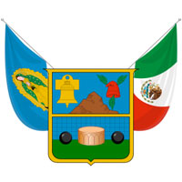

Vestigios de la prehistoria en Hidalgo han sido hallados en las regiones de Tepeapulco, Tulancingo, Actopan y Huichapan; su antigüedad oscila entre los 14 000 y los 2500 a.C. Es en Huapalcalco en el municipio de Tulancingo, donde los restos más antiguos de vestigios humanos en territorio hidalguense se han encontrado. Los primeros en fundar colonias en estos territorios, fueron grupos olmecas, que aprovecharon los bancos de jade y serpentina. Durante el Periodo Preclásico se desarrolla la explotación de la obsidiana cobró relieve, como en los yacimientos de la Sierra de las Navajas. Las primeras evidencias de estratificación social en Hidalgo se han encontrado en La Loma en el municipio de Tepeji del Río de Ocampo.. La vegetación que se puede encontrar en las sierras de Hidalgo está representada por abeto, pino, encino, oyamel y enebro; también hay copal, caoba, palo de rosa, ébano, framboyán, mezquite, cafeto, nopal, agave, lechuguilla y damiana. En el valle de Tulancingo se encuentran árboles frutales de tejocote, pera, membrillo y manzano. En la comarca Minera crecen, entre otras plantas, cactus, mezquite, maguey y nopal. En los llanos de Apan y la Cuenca de México existen nopales, yuca, mezquite y pirul. La vegetación del Valle del Mezquital está formada por huizache, ahuehuete, nogal, biznaga, pirul, cardón, garambullo y otras plantas de clima seco. Entre la fauna más abundante de la zona destacan las siguientes aves, mamíferos y reptiles: garzas, cotorras, colibríes, tordos, búhos, zopilotes, gatos monteses, coyotes, zorrillos, conejos, liebres, lagartijas y serpientes de cascabel. Hacia el centro y en toda la parte norte y este del estado existen venados cola blanca, onzas y jaguares. En la Sierra de la Huasteca la fauna típica está compuesta de tlacuaches, puercoespines, tigrillos, tejones, codornices y guajolotes. La existencia de un suelo árido y las escasas lluvias de temporal que se presentan en el Valle del Mezquital, propicia que se dé la presencia de coralillos, lagartijas, camaleones, arañas, ciempiés, escorpiones, grillos, chapulines, hormigas y pinacates. El paste es un platillo de origen córnico que se consume en la Comarca Minera; es una especie de empanada cuya base es harina de trigo, con un relleno que resulta de una combinación con carne de res, papa, perejil, pimienta, al mexicanizar este producto se agregó chile a la receta original. La superficie agrícola sembrada en el año 2013 fue de 576 907 hectáreas, de estas, 146 428 ha fue de riego (25.4 %) y 430 479 ha fue de temporal (74.6 %).De los setenta y seis cultivos sembrados en el estado los principales en cuenta a superficie sembrada fueron: maíz (44.0 %); cebada (19.0 %); alfalfa (8.0 %); frijol (6.0 %); avena forrajera (5.0 %); café cereza (4.0 %) y pastos (4.0 %) que en conjunto suman el 91.0 % de la superficie total.
